DI-engine入门¶
RL入门¶
1. Quick Start Demo¶
1.1 安装DI-engine¶
提示：如果是在服务器上，记得将
~/.local/bin加入环境变量$PATH，否则会无法使用命令行ding。Linux上配置环境变量的方法可以参考这份教程，重点关注方法一（临时性）和方法二（永久性）即可。
1.2 cartpole DQN demo¶
根据文档教程（英文、中文）跑通cartpole DQN demo
分为config, env, policy, model, worker(learner, collector, evaluator, buffer), pipeline几个部分。config是整个实验的配置文件，env是根据config建立起来的环境（分为collect环境和evaluate环境），policy也是根据config建立起来的算法策略，model为其中使用的神经网络；四个worker根据policy建立起来，它们分别会使用policy中不同的方法（对应不同的模式mode）。最后，将上述所有组件连接在一起，就可以得到一个完整的RL训练和验证的pipeline。
在demo成功跑起来并收敛后，尝试按照教程添加可视化功能，保存evaluate录像。
1.3 理解环境¶
上述demo中用到的cartpole环境，是RL中最基础常用的离散动作环境。cartpole的目标是利用cart（小车）左右移动来平衡画面中pole（竖杆），竖杆保持平衡的时间越长，得分reward越高。竖杆起初是竖直的。
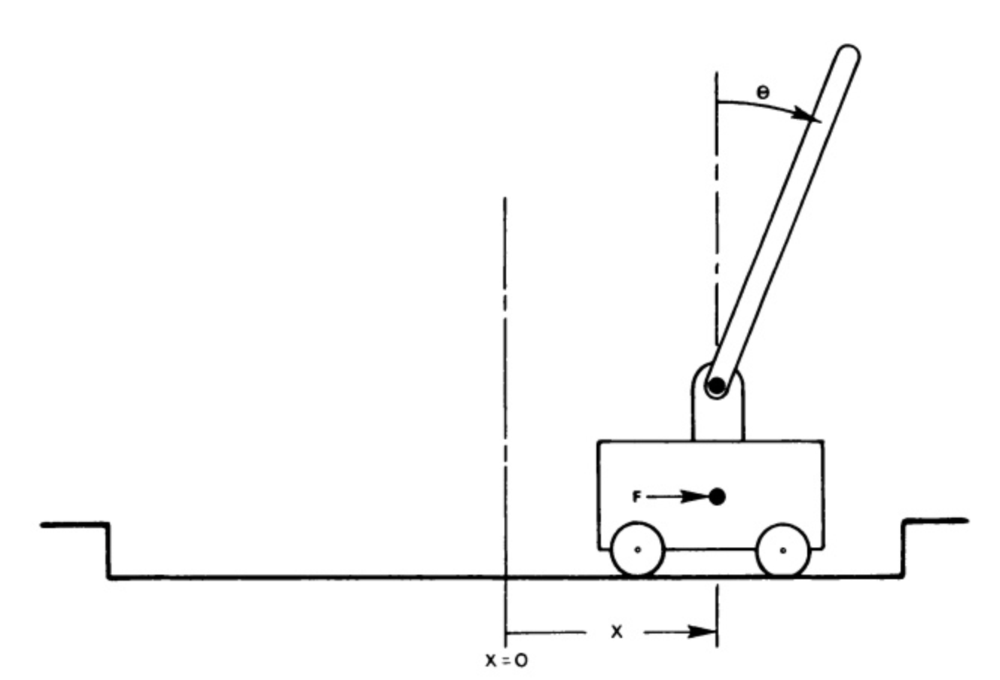observation
四维向量：
\(x\): 小车的位置，取值范围[-4.8, 4.8]
\(\frac{dx}{dt}\) : 小车的速度，取值范围(-Inf, Inf)
\(\theta\): 竖杆的角度，取值范围[-24 degree, 24 degree]
\(\frac{d\theta}{dt}\) : 竖杆顶端的速度，取值范围(-Inf, Inf)
action
离散的一维动作。0表示小车向左移动，1表示小车向右移动。
注：action施加的力的大小是固定的，但作用在小车上，使得校车减小或增大的速度不是固定的，它取决于当时竖杆的角度。
reward
智能体每次给出一个action时，都得到值为1的奖励，包括终止状态（即给出action后episode结束时，也会得到值为1的reward）。
初始状态
所有观测直都从[-0.05,0.05]中随机取值，作为初始状态。
终止条件
达到下列条件之一时，当前episode终止：
竖杆与竖直方向角度超过12度
小车位置距离中心超过2.4（小车中心超出画面）
episode长度超过200(cartpole-v0，在DI-engine中使用的环境) / 500(cartpole-v1)
收敛判断条件
判断n个episode（n可自定义）的累积reward的平均值是否到达设定值stop_val，我们设定cartpole-v0该值为195。
目前常用的cartpole环境已经集成在OpenAI Gym中，如果想了解如何通过gym的API使用环境，可以参考这个链接。
2. 尝试新算法¶
在离散与连续环境中调试新的算法，在serial pipeline下调收敛，并进行可视化。
离散环境使用box2d/lunarlander，连续环境使用box2d/bipedalwalker。
算法采用DI-engine中已经实现的算法，故只需要写一个新的config，使用ding命令行启动运行，调试至收敛即可，例如ding -m serial -c NEW-CONFIG -s 0。
提示：进行本步骤时，需要对离散型与连续型的动作空间、对应环境和常用算法有一个基本的了解。在具体尝试某种算法的时候，需要通读其论文和代码实现，对算法原理和涉及到的超参数有一个基本的认识
3. 经典算法精读¶
精读一些经典算法，如DQN, C51, IQN, Rainbow, A2C, PPO, IMPALA, DDPG, TD3, SAC, QMIX, COMA, MAPPO……横向对比，纵向深入探究。
具体产出形式：针对算法给出一些问题，有意思的QA可以整合进文档Hands-on RL部分，举例：
对比PPO, SAC, TD3在连续动作空间上，动作输出时的处理方式（如何优化，如何探索和利用）
对比distributional RL算法的一系列版本，C51，QRDQN，IQN
priority在不同的算法中该如何定义，DQN，R2D2，TD3
哪些算法在收集训练数据时必须保持整个episode的时序关系
4. 复现¶
复现某个DI-engine中尚未实现的RL算法
paper list：
SQL连续动作空间版本
MPO
PSRO (MARL)
FQF
BeBold (exploration)
QPLEX (MARL)
BCQ (offline RL)
Decision Transformer
LICA (MARL)
工程协作入门¶
1. git使用¶
如果对git几乎不了解，那么推荐看一下廖雪峰git教程，号称一小时上手git命令，会对相关概念和命令有一个正确且充分的认识。下面罗列一下实际开发中常用的知识。
1.1 基础概念和命令¶
原始代码 、工作区、暂存区、本地仓库、远程仓库的概念，和它们之间互相转换的命令：
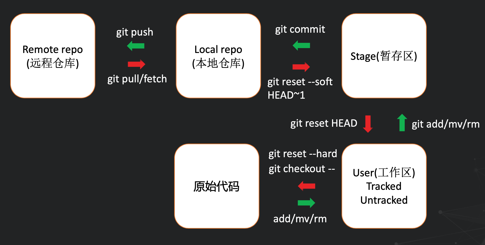git
stash命令：如果正在开发分支A，此时突然来了个工作需要切换到分支B，而A又还没有到可以提交一个commit的程度，就可以使用git stash保存下对分支A的修改（如果希望像commit一样留下一些信息，可以使用git stash save "STASH-MESSAGE"），然后切换到分支B（如果不git stash或git commit会报错）。在分支B施工完成后，可以切换回分支B，然后利用git stash pop将暂存的内容恢复。
stash是一个栈式结构，如果需要pop某个非栈顶元素，可以先使用git stash list查看所有的stash记录，然后使用命令git stash pop stash@{0}，其中0可以替换为任何存在的stash记录编号。
git log命令：可以显示提交commit的信息，可参考教程
git cherry-pick命令：可以将某个commit应用到其它的分支上，其和git merge的区别是，git merge会将整个分支合并进其它分支，而git cherry-pick只会将某个commit应用在其它分支，可参考教程
1.2 git commit规范¶
我们对commit进行了一些规定：
尽量每一个独立的功能对应一个commit
- 模板：feature/fix/polish/test/style(commiter_name or project_name): commit message举例：fix(zlx): add tb logger in naive buffer
1.3 举例¶
下面以一次实际开发过程为例，讲解最基本的可能用到的git命令。
clone repo：
git clone REPO-URL；切换到自己的开发分支：
git checkout -b YOUR-BRANCH-NAME进行一些修改，每完成一个功能后，就将希望提交的内容
git add进来（这里可以先利用git status查看所有的改动，如果想添加所有修改的文件，可以使用git add -u命令）；然后提交一个commit：git commit -m COMMIT-MESSAGE。然后将本地仓库推送到远程仓库：
git push。如果是首次推送，会提示远程仓库没有与之关联的分支，按照提示修改命令即可，一般为git push --set-upstream origin YOUR-BRANCH-NAME。如果在你checkout新的分支后，别人也修改了代码并推送到了远程仓库，会提示存在冲突，需要利用git pull命令将最新的代码拉取下来，并解决最新代码与自己的代码之间的冲突（若有），然后才可push。分支合并命令：
git merge BRANCH-NAME。在我们的开发中，如果单独切出分支并提了pull request，则必须保证该分支可以无冲突地合并进master。故merge命令常常使用在以下场景：A同学与B同学分别从master分支切出C分支和D分支进行开发，A同学完成了C分支并将其merge进了master分支，B同学在开发的最后，需要git merge master并解决全部冲突。
1.4 .gitignore文件¶
我们本地的开发路径下，有很多不想提交到远程仓库的文件，比如项目的本地配置信息、pycache、log文件、checkpoint等等。这时，使用.gitignore文件可以通过字符匹配的方式忽略掉这些文件
，就可以更加愉快地使用git add .或git add -u命令了（当然，此时还是需要先git status查看一下都增加/删除/修改了哪些文件）。
.gitignore文件中常见的写法如下：
# 忽略指定文件
HelloWrold.class
# 忽略指定文件夹
pkg/
__pycache__/
# *是通配符，可以匹配任何字符串
# 忽略.jpg的所有文件
*.jpg
# 忽略名称中末尾为ignore的文件夹
*ignore/
# 忽略名称中间包含ignore的文件夹
*ignore*/
由于DI-engine的.gitignore文件中禁止了图片类型文件（.jpg, .jpeg,
.png文件等），而文档部分又必须上传图片，此时可以使用git push -f PICTURE-FILE来上传图片。同理，如果有其它被禁止的文件，也可以利用这个命令上传。
2. github使用¶
2.1 PR工作流程¶
在discussion中进行讨论，某人总结并提了issue，开发者现在需要针对issue进行开发
在github提Pull Request
代码开发
保证通过github CI
merge最新main分支，解决冲突，根据code review结果进行迭代，最终被合并
2.2 github actions¶
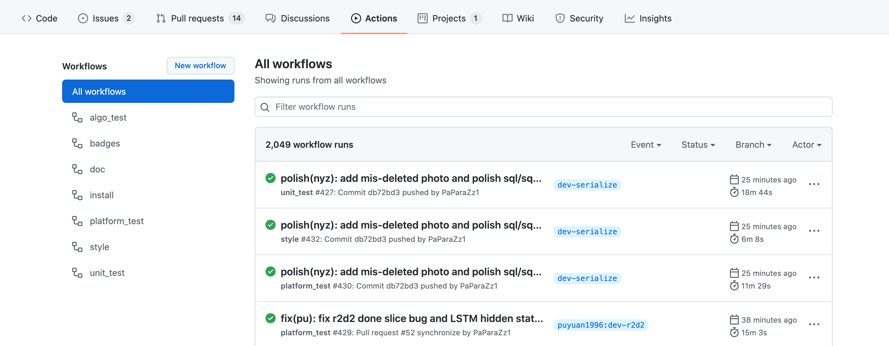GitHub actions是一种持续式集成，用于自动化完成各种任务。如果想进一步了解可以移步教程（不具体了解也没关系）。DI-engine repo中主要使用actions进行各种测试（算法测试、平台测试、风格测试、单元测试等），只有当一个pr通过了所有的测试，它才可能会被merge。假如有actions没有通过，pr会显示如下图：
此时就需要点击Details进入查看具体失败原因。如果本地可以通过测试，但CI不通过，可以尝试rerun：
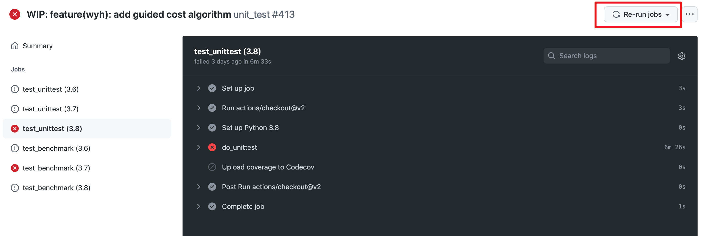2.3 issue & pull request¶
模板
issue和pr都有自己的模板。
issue需要选择类别，确保已经阅读过文档和所有的issue, pr，并指明版本号、操作系统，然后才是正式描述这个issue。详细见下：
I have marked all applicable categories:
exception-raising bug
RL algorithm bug
system worker bug
system utils bug
code design/refactor
documentation request
new feature request
I have searched through the issue tracker and pr tracker
I have mentioned version numbers, operating system and environment, where applicable:
import ding, torch, sys print(ding.__version__, torch.__version__, sys.version, sys.platform)
pr的模板中，Description用于描述当前pr的作用和功能，Related Issue用于列出相关的issue，TODO用于列出目前还没有完成的工作，Check List用于确保融合了源分支并解决冲突，通过代码风格检查，通过所有测试。详细见下：
merge the latest version source branch/repo, and resolve all the conflicts
pass style check
pass all the tests
pr的命名规范可以参考git
commit。此外，如果当前pr仍在开发中，可以在pr名字的开头加上WIP:标记，它是Work
In Progess的缩写。
label和milestone
每个issue和pr都需要被打上标签label，并注明相关的重要时间节点milestone，milestone的意义是追踪每个具体任务对应的中长期目标，二者需要在界面的这个位置进行指定：
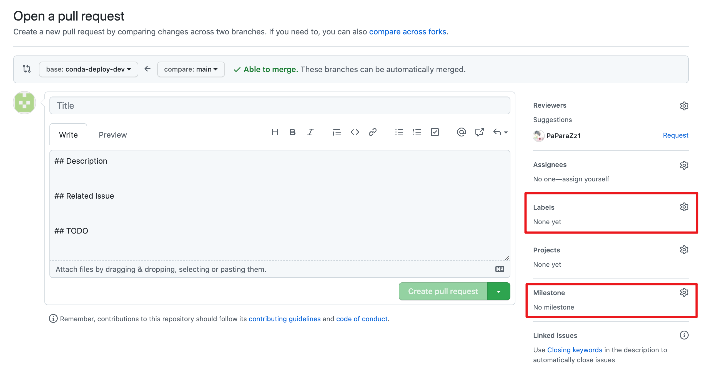DI-engine repo中目前的label支持：
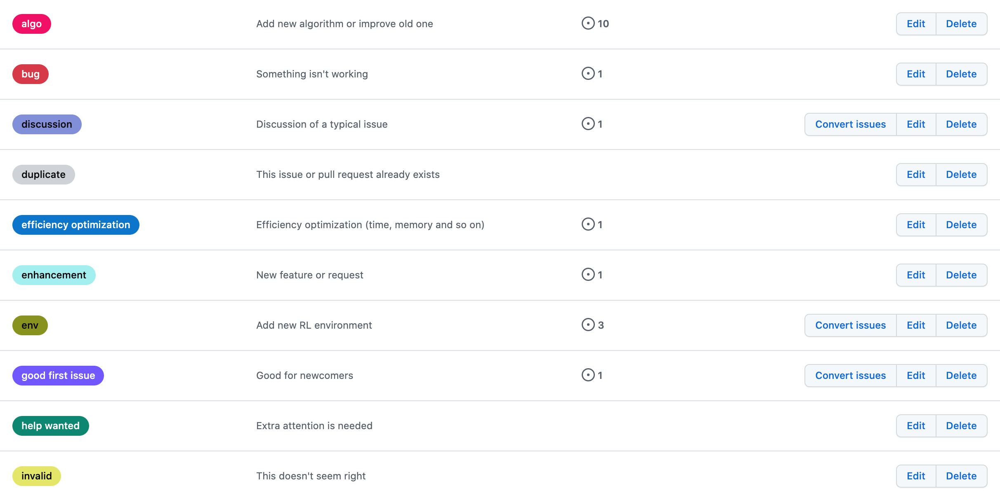 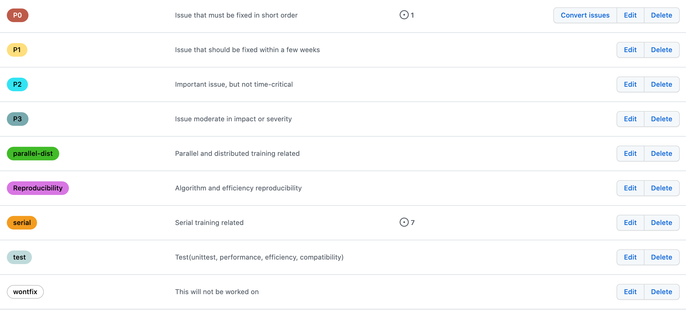目前的milestone支持：
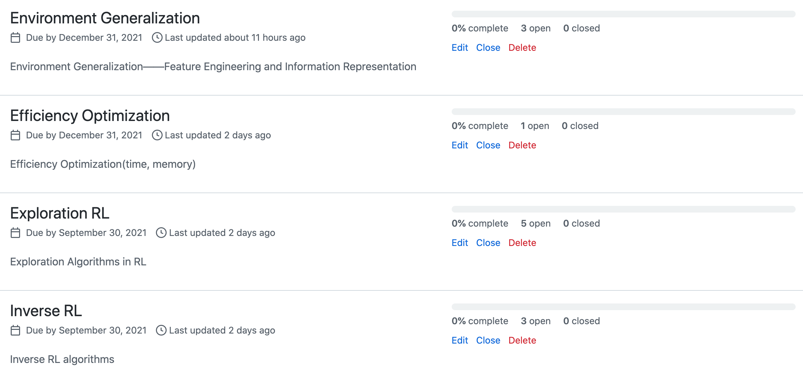review
PR review要求：主要是从以下五个角度去看，代码风格，算法原理，计算效率，接口易用性，兼容性。任何问题都可以提comment。推荐每天抽出一定时间看看github上的PR看看整个开发社区在做什么，有什么可以学习或者互相提升的地方。
如果需要review别人的PR，一般有两种评论的方式：
一是直接在pr的conversation中评论，通常是针对整体进行评论，如下图：
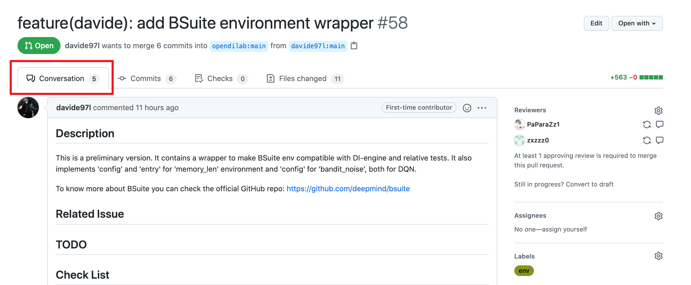 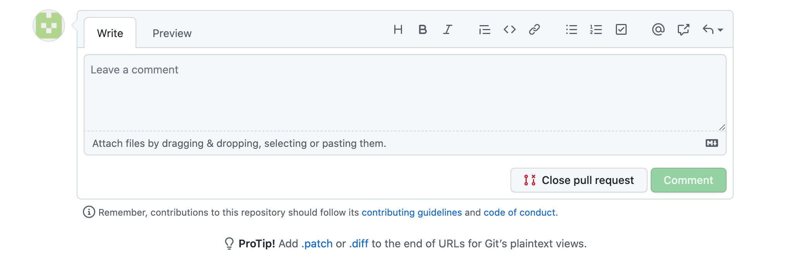二是针对具体某行或某段代码进行评论，可以在Files Changed中点击加号新建评论，如下图：
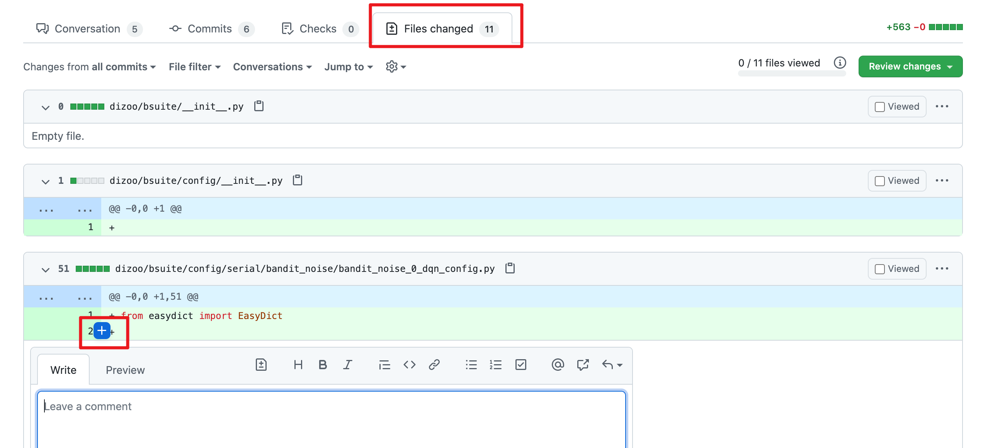3. 代码风格¶
3.1 命名规范¶
文件名：全小写，可使用下划线，如my_policy.py
类：首字母大写单词串，如MyClass；内部类可使用额外的前导下划线
函数&方法：全小写，可使用下划线，如my_function
函数和方法的参数：实例方法的第一个参数使用
self，类方法的第一个参数使用cls；列表参数使用*args，键值对参数使用**kwargs
变量：全小写，可使用下划线，如my_variable
对于函数、方法、变量，如果是proceted或private，可以前加一个或两个下划线，如_my_protected_function,
__my_private_function。
在实际命名中，如果名称和保留的关键字冲突，可以后加下划线，比如type_。
分支：一般使用2-4个英文单词，中间以-分割，表明这个分支主要内容的类别（如dev/test/doc/fix等）+简单描述具体内容。
3.2 自动化检查工具¶
Format
依赖：yapf, pep8
配置文件： .style.yapf
检查方法：
sh format.sh PATH，如：sh format.sh ./,sh format.sh ding/utils修改方法：大部分会直接帮助修改，无需手动修改
Grammar
依赖：flake8
配置文件：.flake8
检查方法：
flake8 PATH修改方法：手动修改，或autoflake8
常见的代码风格错误
注释行的最后不能有空格
文件的最后要有换行（即要有一个空行）
4. pytest单元测试¶
4.1 如何写¶
可参考很多目录下的tests文件夹，例如ding/envs/env_manager/tests。
命名要求
可以构建一个函数用于测试，要求函数以test开头；
或者可以构建一个类用于测试，要求类以Test开头，方法以test开头。
assert断言
若assert不成立，会展示非常细粒度的信息
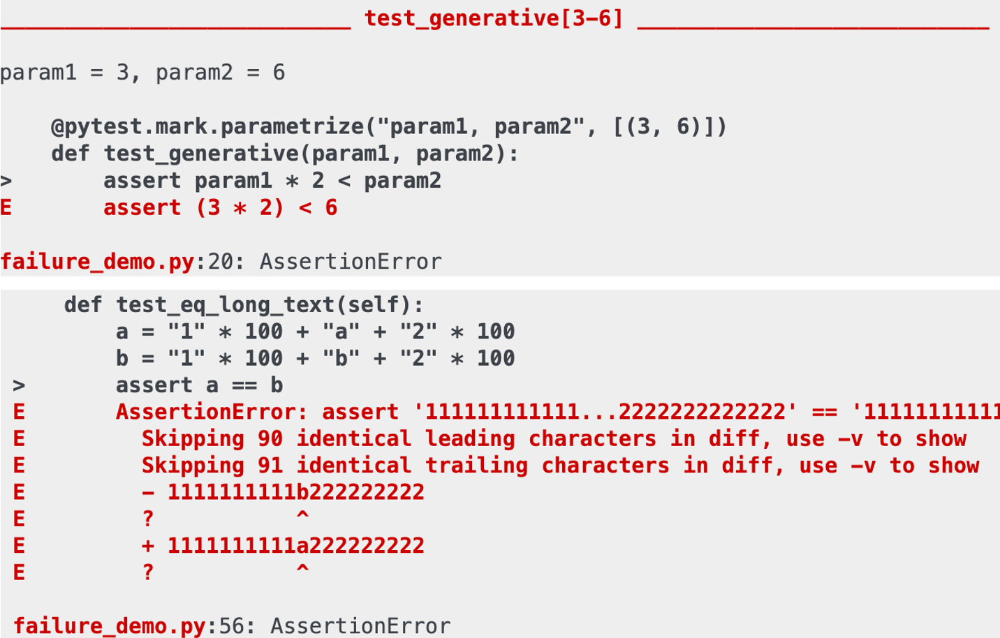也支持异常断言：
import pytest
def test_zero_division():
with pytest.raises(ZeroDivisionError):
1 / 0
fixture和conftest机制
fixture是pytest中非常重要的机制，可以完成测试所需资源的初始化，并作为测试函数的参数传入，供测试函数使用，此外也可以进行资源的回收和清理。通过定义作用域，可以轻松实现代码的复用。这个教程写的很详细。DI-engine中的实例，可以参考ding/league/tests/test_player.py。
fixture一般使用在一个文件中，即同文件下，定义fixture，然后使用。如果需要跨文件使用fixture，可以使用conftest机制。conftest是config
of
test的缩写。在测试文件中不需要显示地import，pytest会自动寻找。可以参考同一个作者的这个教程。DI-engine中可以参考ding/league/tests/conftest.py。
mark装饰器
可以通过添加pytest.mark("XXXX")装饰器来让测试分类执行。
运行时使用pytest –m MARK-NAME来执行被标记的测试。
approx
近似函数，支持数值, list, dict, numpy.ndarray
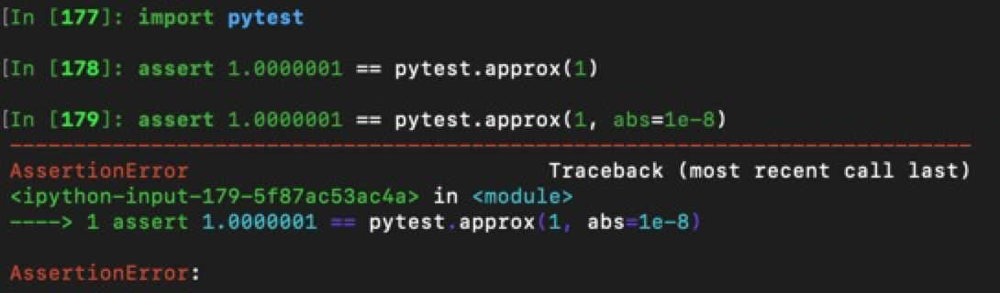parameterize
pytest 中可以使用
@pytest.mark.paramtrize(argsnames, argsvalues, ids=None)
来方便多组测试的参数配置，其中：
argsnames：参数名，是个字符串，如中间用逗号分隔则表示为多个参数名argsvalues：参数值，参数组成的列表，列表中每个元素就是为参数赋的值，如果是多个参数，值将与名字按照顺序一一对应。
例如，若@pytest.mark.paramtrize('data', [1, 2, 3])，则会为data变量分别赋值为1、2、3进行测试；若@pytest.mark.paramtrize('var1, var2', [[1, 2], [2, 3], [3, 4]])，则会为(var1, var2)变量分别赋值为(1,
2)、(2, 3)、(3, 4)进行测试。
可以参考ding/utils/data/tests/test_dataloader.py中的写法。
4.2 如何测¶
如果是单纯的测试，可以直接使用命令pytest -sv TEST-PATH
但有时，我们希望可以知道测试的覆盖率是多少，就需要用到如下命令：
pytest -sv ./ -m unittest --cov-report term-missing --cov=../
其中的参数含义如下：
-m: mark分支
-sv：报告陈列方式
–cov-report term-missing：指示“检测未覆盖的部分”
–cov：检测覆盖哪个路径下的代码，这里测试父级（
../）目录下代码覆盖率的原因是，例如，rl_utils目录下存放具体代码和tests文件夹，即tests和要测试的代码同级
命令执行完成后，会得到.coverage文件，执行命令
coverage html后，得到 htmlcov文件夹，打开其路径下的
index.html文件，就可以看到对应文件的测试覆盖率了。


{kind=link}
{kind=link}
{kind=link}
{kind=link}
{kind=link}
{kind=link}
{kind=link}
{kind=link}
{kind=link}
{kind=link}
{kind=link}
{kind=link}
{kind=link}
{kind=link}
{kind=link}
{kind=link}